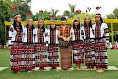
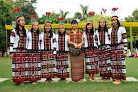

-logos_black.png)

The Taj Mahal is an ivory-white marble mausoleum on the south bank of the Yamuna river in the Indian city of Agra. It was commissioned in 1632 by the Mughal emperor, Shah Jahan (reigned from 1628 to 1658), to house the tomb of his favourite wife, Mumtaz Mahal.
The Taj Mahal”

Towering 73 metres high above the greens in Mehrauli, construction for this five-storey minaret was started by Qutb ud Din Aibak, founder of Delhi Sultanate. It is renowned for the artistic brick-work on its pillars and arches
Qutup-minar

India lies in Asia continent, in the east there's Mayanmar, north-east there's lies China and Indian Ocean in the south.
India-map

Beauty of mother nature
Enjoy the magic of Photography
 
